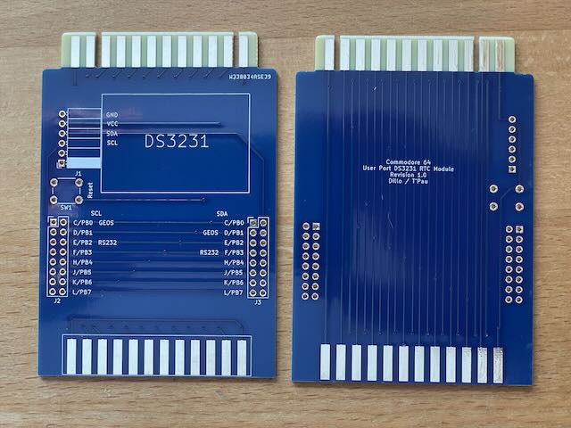
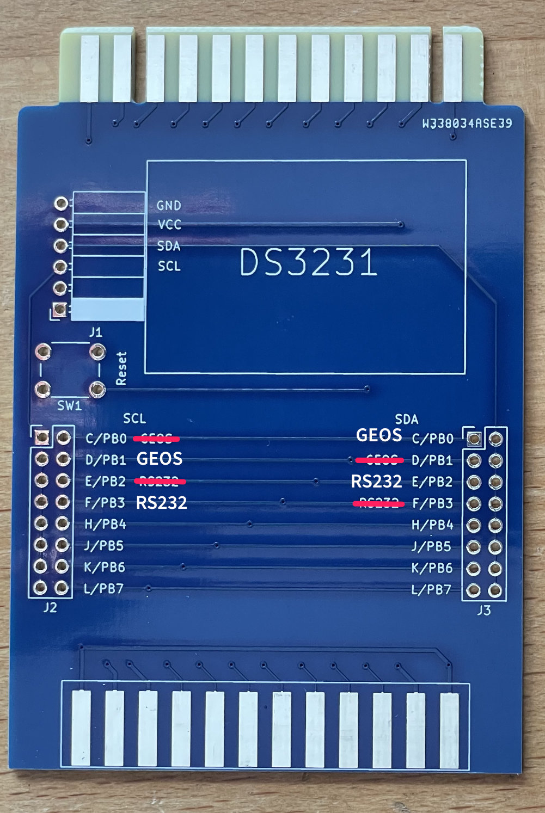
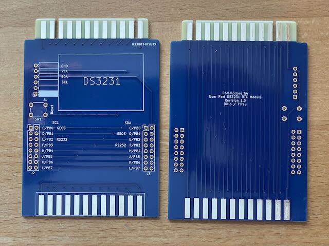
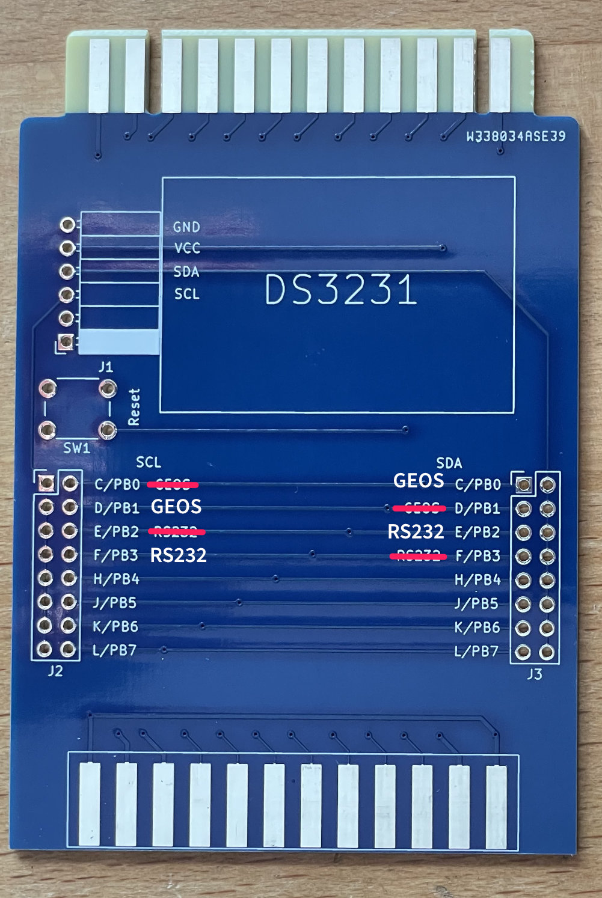
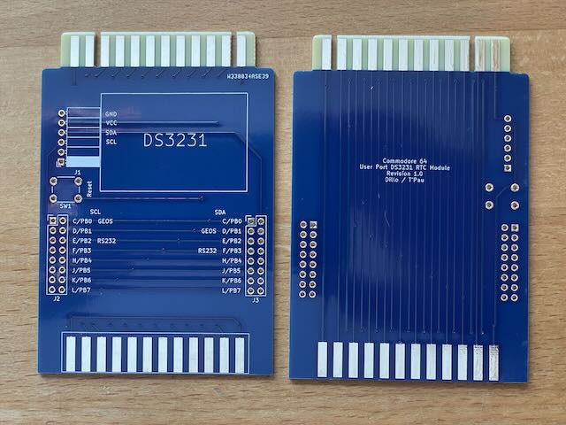
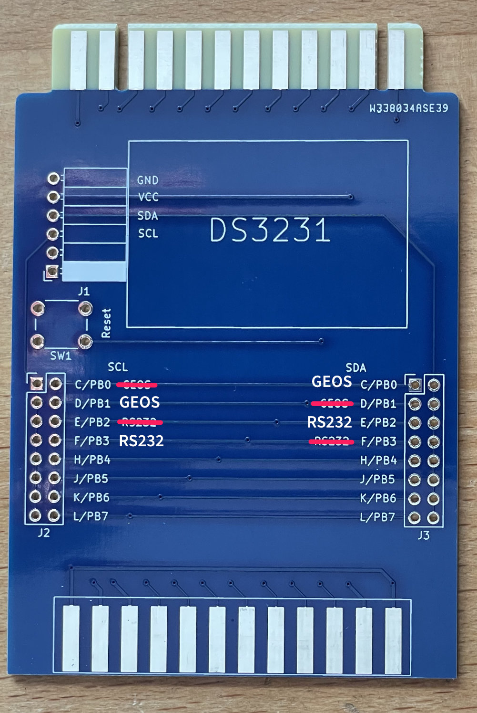

Ich habe die Platine aufgebaut und getestet. Die Beschriftung enthält Fehler. Pin-Beschriftung für SLA und SDA sind vertauscht.
Projekt-Homepage • Interakiver Bestückungsplan

Dieses Modul erlaubt den Anschluss einer Echtzeituhr am Userport des C64. Der Userport ist durchgeschliffen, sodass noch weitere Geräte angeschlossen werden können. Es gibt Treiber für GEOS und C64 OS.
Die Schaltung stammt von Timo Voutilainen. Das Platine stammt von mir.
Bei der Beschriftung sind SCL (links) und SDA (rechts) vertauscht.
| Komponente | Anzahl | Preis | Anbieter |
| Platine | 1 | €1.00 | |
| 2x8 Stiftleiste | 2 | €0.40 | Reichelt |
| 90° 1x6 Buchsenleiste | 1 | €0.67 | Reichelt |
| Jumper | 2 | €0.06 | Reichelt |
| 6x6x5mm Taster | 1 | €0.35 | Reichelt |
| M3 Schraube | 1 | €0.01 | Reichelt |
| M3 6mm Abstandhalter Buchse/Buchse | 1 | €0.01 | Reichelt |
| Userport Stecker | 1 | €2.90 | Restore-Store |
| DS3231 Modul | 1 | €5.97 | eBay |
| CR2032 Batterie | 1 | €0.37 | Reichelt |
| nur Platine | €1.00 | ||
| Bausatz | €11.74 |